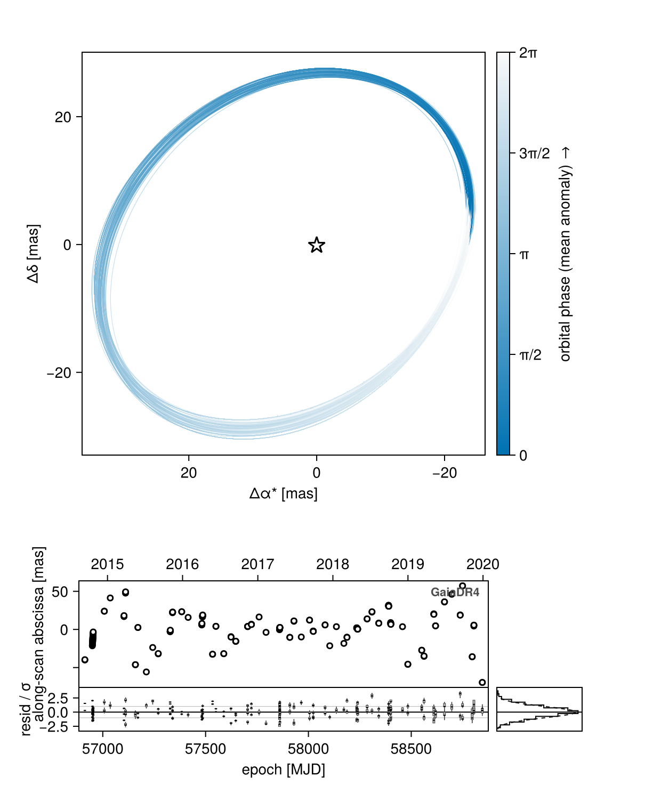
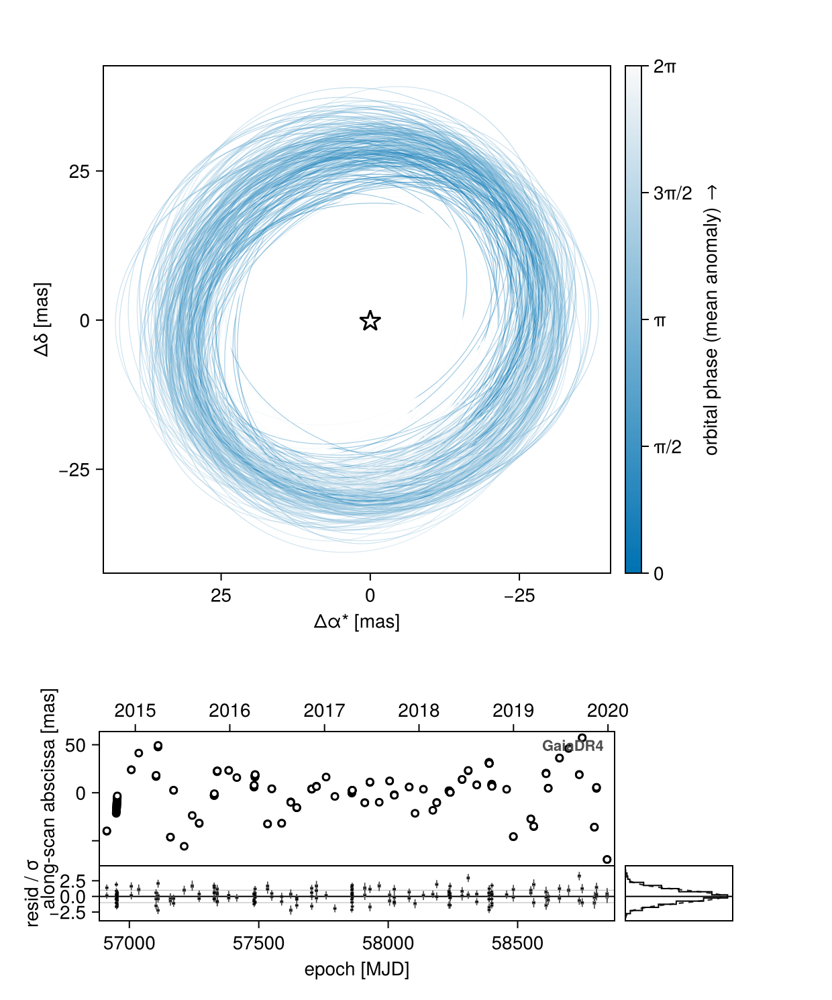
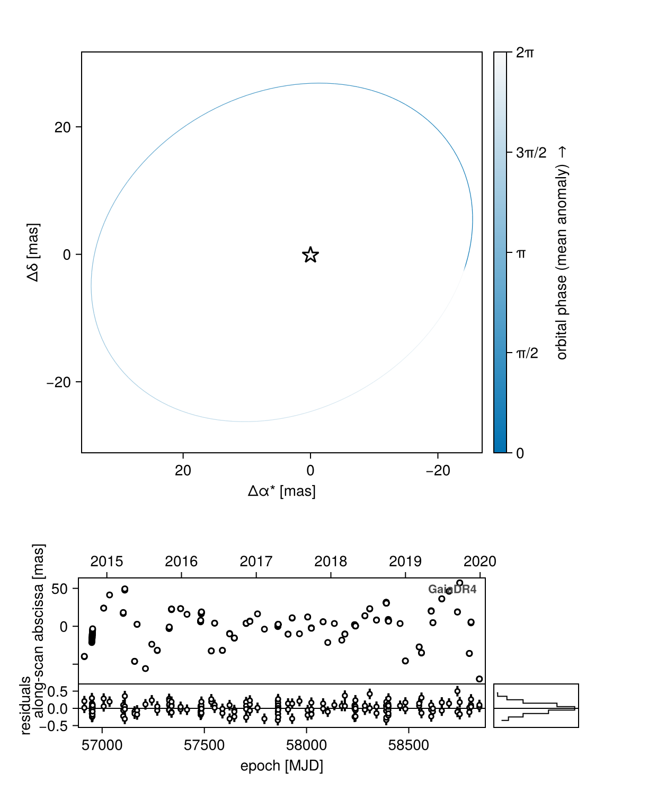
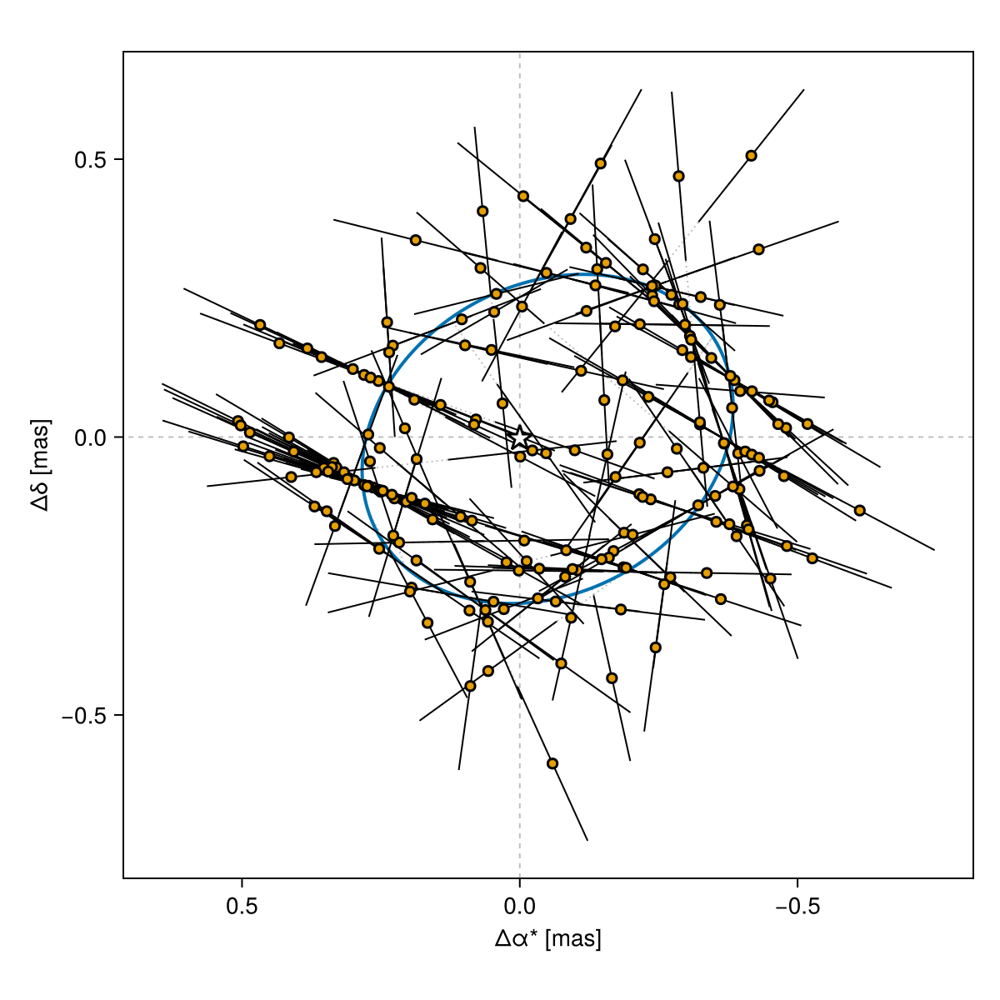
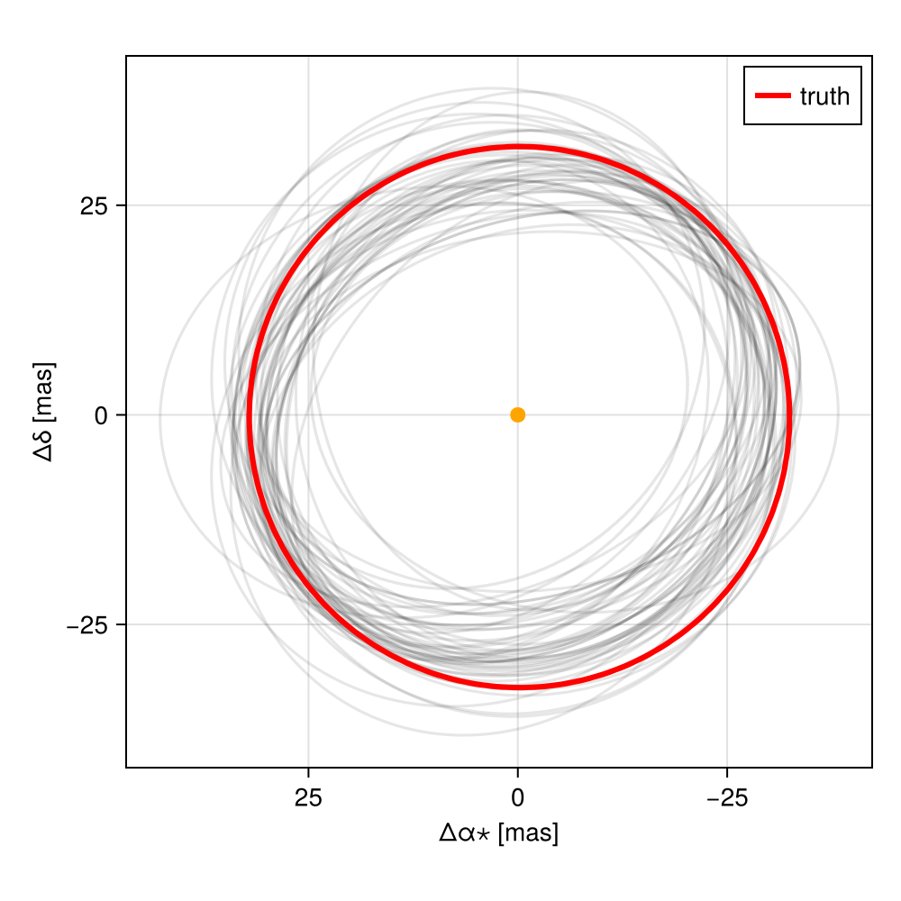
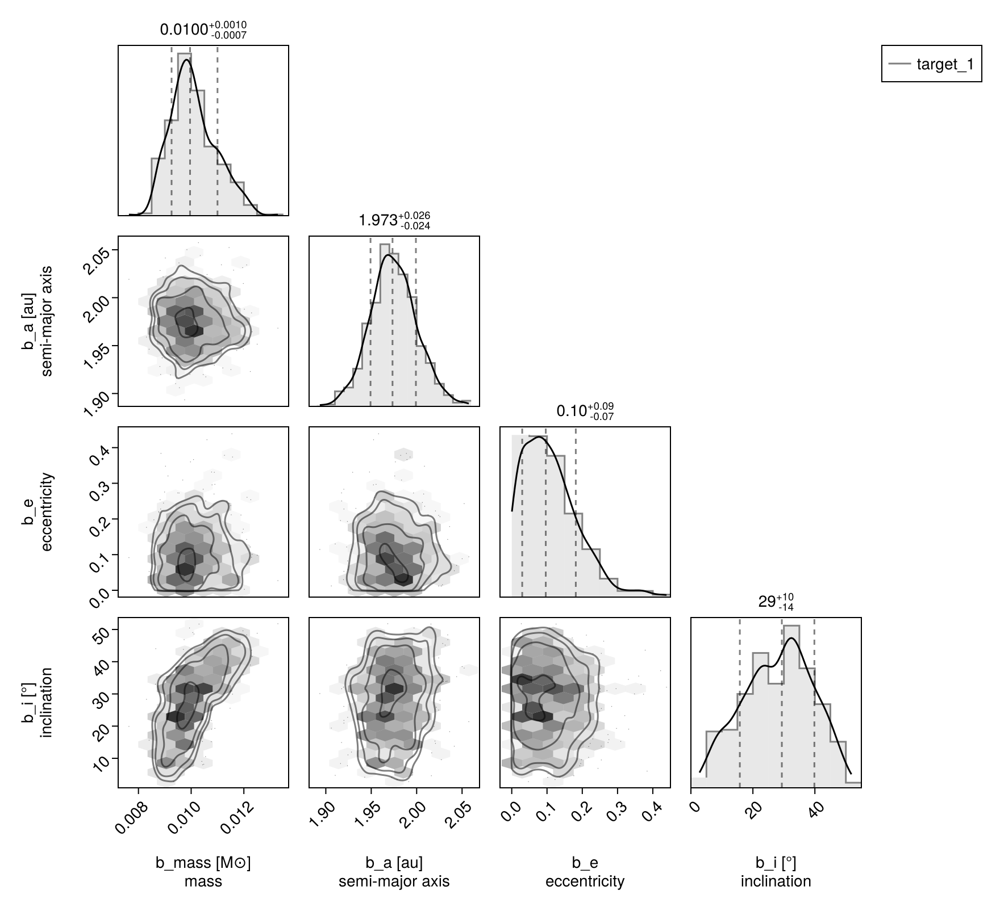
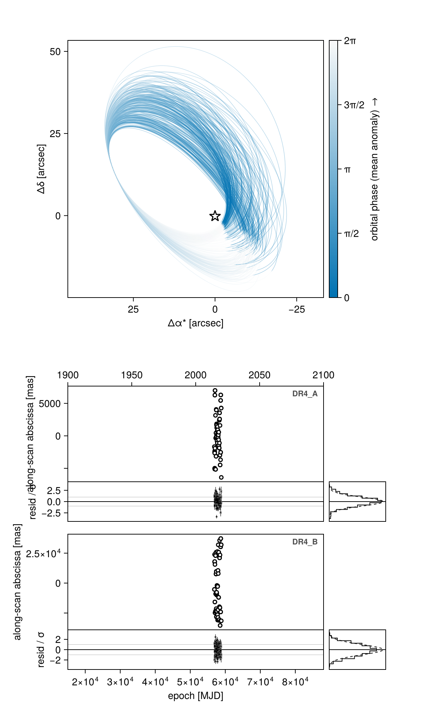
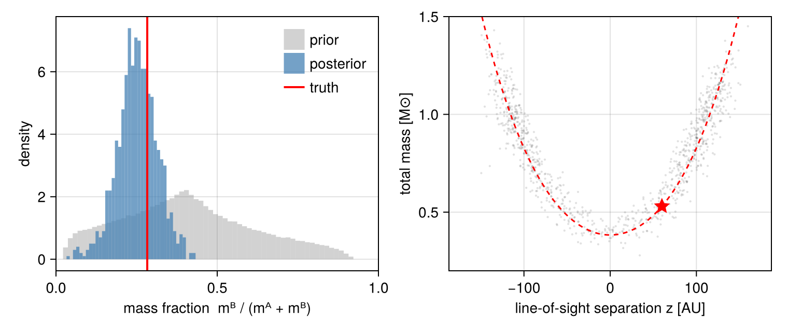
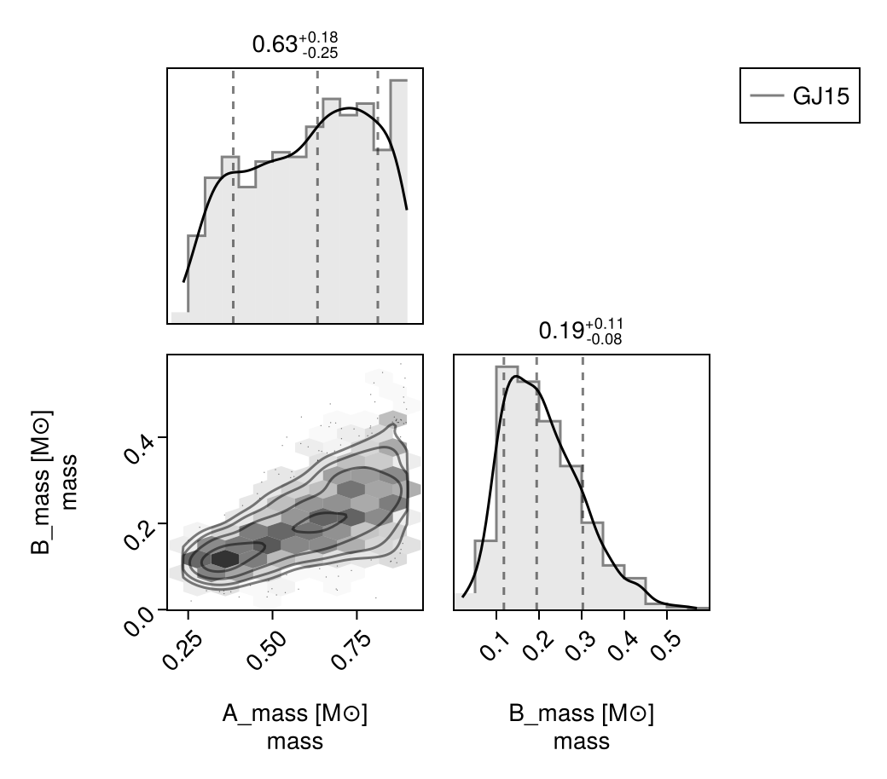

Simulating and Fitting Gaia DR4 Data
This tutorial demonstrates how to use Octofitter to simulate Gaia DR4 data for a particular target.
Before reading this, take a look at the general Generating and Fitting Simulated Data tutorial.
To be as realistic as possible, we will select a particular star as the basis of our simulation. This will allow us to give reasonable estimates of
- the measurement epochs and scan angles (retrieved from GOST)
- the measurement noise, from that source's measured Gaia performance
"But wait, I just want to simulate a hypothetical planet, why do I have to pick a real star?"
Gaia's sensitivity is far from uniform! If you're not sure what star to use, just pick a the Gaia ID of your favourite star that has a representative magnitude and colour.
Setup
using Octofitter, Distributions
using CairoMakie, PairPlots, Pigeons
using StatisticsPrepare Star Info and Noise
A realistic simulation needs three things: when Gaia looked at the star and at what scan angle, the parallax factor of each of those looks, and how precisely each one was measured. The first two come from GOST, Gaia's scan-law forecast service; the third comes from the G23H catalog (Thompson et al. 2026), which carries a per-source, measured along-scan noise calibration — the same one G23HObs uses.
gaia_id = 5064625130502952704
dr3 = gaia_dr3_solution(; gaia_id) # α, δ, ϖ, G … from the DR3 archive (cached)
(; dr3.ra, dr3.dec, dr3.parallax, dr3.phot_g_mean_mag)(ra = 42.03733343244703, dec = -31.42348623214663, parallax = 5.28197719660611, phot_g_mean_mag = 6.941057)The noise model
g23h_scan_uncertainty reads this source's calibrated along-scan uncertainties out of the catalog:
σ = g23h_scan_uncertainty(;
gaia_id,
)(gaia_id = 5064625130502952704, phot_g_mean_mag = 6.941057, σ_AL = 0.05813228279803717, σ_att = 0.07765105456802447, σ_calib = 0.14901214069992602, σ_formal = 0.09700025040605453, n_ccd = 8.82, σ_transit_formal = 0.03266168325662587, σ_transit_true = 0.15254967593912058)Gaia measures a source about nine times per field-of-view transit — the sky-mapper sample, then AF1 through AF9 — and it is the transit, not the individual CCD observation, that DR4 publishes an abscissa for. The three calibrated terms split along exactly that line:
σ_ALandσ_attare per-CCD-observation and independent, so they do average down within a transit. Their quadrature sumσ_formal= 0.097 mas is the per-CCD formal error, andσ_transit_formal=σ_formal/√n_ccd= 0.0327 mas is the formal error of one transit-level abscissa (n_ccd= 8.82 for this source, from its own DR3 counts).σ_calib= 0.149 mas is a calibration error shared by all the CCD observations of a transit, so it does not average down — and it is not included in Gaia's formal uncertainties. For most sources it dominates the actual per-transit scatter,σ_transit_true= 0.153 mas.
These are calibrated per source against real Gaia performance and vary by a factor of a few from star to star. As a check on the scale: σ_formal reproduces the median published per-CCD centroid_pos_error_al of the three Gaia DR4 pre-release sources to 4–13%, and σ_transit_formal lands 20–35% below the per-transit error bars that the recommended bootstrap-median reduction assigns to those same real transits — about what the inefficiency of a median of nine CCD samples, relative to an optimal combination of them, predicts.
If your target has no G23H calibration — the catalog does not cover everything — pass the three σ yourself and say where they came from.
The scan geometry, and the table
gaia_dr4_transit_template queries GOST for the transits Gaia is forecast to make of this position over the DR4 baseline and returns them in the format GaiaDR4AstromObs reads:
transits = gaia_dr4_transit_template(;
ra = dr3.ra,
dec = dr3.dec,
# We *simulate* the true scatter; see the note below on what a real DR4
# table would instead quote.
σ_al = σ.σ_transit_true,
baseline = :dr4,
)Table with 6 columns and 191 rows:
epoch scan_pos_angle parallax_factor_al centroid_pos_al centroid_pos_error_al outlier_flag
┌──────────────────────────────────────────────────────────────────────────────────────────────────
1 │ 56912.9 -130.619 -0.429109 0.0 0.15255 0
2 │ 56913.0 -130.364 -0.431172 0.0 0.15255 0
3 │ 56949.3 -121.721 0.0697506 0.0 0.15255 0
4 │ 56949.5 -120.674 0.0611594 0.0 0.15255 0
5 │ 56949.8 -119.627 0.0525574 0.0 0.15255 0
6 │ 56949.9 -119.317 0.0500108 0.0 0.15255 0
7 │ 56950.0 -118.579 0.0439458 0.0 0.15255 0
8 │ 56950.1 -118.269 0.0413966 0.0 0.15255 0
9 │ 56950.3 -117.53 0.0353258 0.0 0.15255 0
10 │ 56950.4 -117.22 0.0327743 0.0 0.15255 0
11 │ 56950.5 -116.481 0.0266986 0.0 0.15255 0
12 │ 56950.6 -116.171 0.0241451 0.0 0.15255 0
13 │ 56950.8 -115.432 0.0180653 0.0 0.15255 0
14 │ 56950.9 -115.121 0.0155103 0.0 0.15255 0
15 │ 56951.0 -114.382 0.00942721 0.0 0.15255 0
16 │ 56951.1 -114.072 0.00687104 0.0 0.15255 0
17 │ 56951.4 -113.022 -0.00177141 0.0 0.15255 0
18 │ 56951.5 -112.283 -0.00785838 0.0 0.15255 0
19 │ 56951.6 -111.972 -0.0104158 0.0 0.15255 0
20 │ 56951.8 -111.232 -0.0165034 0.0 0.15255 0
21 │ 56951.9 -110.922 -0.0190609 0.0 0.15255 0
22 │ 56952.0 -110.182 -0.0251482 0.0 0.15255 0
23 │ 56952.1 -109.872 -0.0277054 0.0 0.15255 0
24 │ 56952.3 -109.132 -0.0337916 0.0 0.15255 0
25 │ 56952.4 -108.821 -0.0363481 0.0 0.15255 0
26 │ 56952.5 -108.082 -0.0424323 0.0 0.15255 0
27 │ 56952.6 -107.771 -0.0449878 0.0 0.15255 0
28 │ 56952.8 -107.032 -0.051069 0.0 0.15255 0
29 │ 56952.9 -106.721 -0.0536231 0.0 0.15255 0
30 │ 56953.0 -105.982 -0.0597006 0.0 0.15255 0
31 │ 56953.1 -105.671 -0.0622529 0.0 0.15255 0
32 │ 56953.3 -104.932 -0.0683258 0.0 0.15255 0
33 │ 56953.5 -103.882 -0.0769433 0.0 0.15255 0
34 │ 57007.5 -89.091 0.595396 0.0 0.15255 0
35 │ 57007.6 -88.8952 0.593949 0.0 0.15255 0
36 │ 57036.3 18.2292 -0.701687 0.0 0.15255 0
37 │ 57103.2 54.6961 -0.306577 0.0 0.15255 0
38 │ 57103.3 54.4219 -0.301977 0.0 0.15255 0
39 │ 57103.4 53.7642 -0.290931 0.0 0.15255 0
40 │ 57110.7 24.4503 0.205861 0.0 0.15255 0
41 │ 57110.8 24.1725 0.210428 0.0 0.15255 0
42 │ 57111.0 23.5158 0.221203 0.0 0.15255 0
43 │ 57111.0 23.2418 0.225689 0.0 0.15255 0
44 │ 57158.6 128.684 -0.341238 0.0 0.15255 0
45 │ 57158.7 128.455 -0.337466 0.0 0.15255 0
46 │ 57170.9 83.2315 0.467078 0.0 0.15255 0
47 │ 57171.0 83.0155 0.470901 0.0 0.15255 0
48 │ 57211.8 -167.53 -0.71429 0.0 0.15255 0
49 │ 57242.8 125.885 0.684094 0.0 0.15255 0
50 │ 57269.7 -134.31 -0.507783 0.0 0.15255 0
⋮ │ ⋮ ⋮ ⋮ ⋮ ⋮ ⋮One row per transit, with epoch in MJD, scan_pos_angle ψ in degrees (the unit the Gaia archive publishes it in, and the unit GaiaDR4AstromObs ingests), GOST's own parallax_factor_al, and centroid_pos_al left at zero — Octofitter's data simulation fills those in below. You can of course put your own measurements there instead.
A forecast is optimistic about how many transits you get: it lists every scheduled one, while real DR4 loses some to dead time and more to AGIS's outlier rejection, which is harshest for bright stars. Gaia-4 goes 122 forecast → 109 in the pre-release → 93 used by AGIS. If that matters for your question, drop rows.
An earlier version of this tutorial expanded each visibility window into ~9 synthetic CCD observations and shrank the error bars to match. Don't do that: the CCD observations within one transit are taken seconds apart and share their attitude and calibration errors, so treating them as independent measurements overstates the astrometric information by up to √9. DR4 publishes one abscissa per transit, so simulating at transit level is both simpler and closer to the data you will actually fit. The pre-release tutorial shows the matching reduction for real CCD-level tables.
How good is a forecast? For Gaia-4, whose real DR4 transits we have, GOST's forecast covers the same MJD 56890–58843 span, matches 108 of the 109 real transits, and reproduces their published scan_pos_angle to 0.004° rms and their published parallax_factor_al to 5 × 10⁻⁵ rms.
That last number is why gaia_dr4_transit_template carries GOST's own parallax factors through instead of recomputing them from an Earth ephemeris, as an earlier version of this tutorial did: Gaia observes from L2, about 0.01 AU from the geocentre, so an Earth-centred factor is off by 0.005 rms — a hundred times worse, and 0.07 mas at ϖ = 13 mas, about twice the per-transit precision.
We put the true per-transit scatter in centroid_pos_error_al, so the data are scattered by exactly the uncertainty the likelihood is told about — the simplest self-consistent simulation. A real DR4 table instead quotes the formal error (σ_transit_formal), leaving the calibration term for the observation's astrometric_jitter to absorb. To simulate that, generate the data as below with σ_al = σ.σ_transit_true, then rebuild the observation from the simulated table with centroid_pos_error_al overwritten by σ.σ_transit_formal, and keep astrometric_jitter free — it should come back at ≈ σ.σ_calib.
# The Gaia DR4 reference epoch, J2017.5.
ref_epoch_mjd = 57936.375
gaiaIADobs = GaiaDR4AstromObs(transits;
target = Photocentre,
ref = Barycentre,
name = "GaiaDR4",
variables=@variables begin
astrometric_jitter ~ LogUniform(0.00001, 10) # mas
ra_offset_mas ~ Normal(0, 10000)
dec_offset_mas ~ Normal(0, 10000)
pmra ~ Uniform(-1000, 1000) # mas/yr
pmdec ~ Uniform(-1000, 1000) # mas/yr
ref_epoch = $ref_epoch_mjd
end
)GaiaDR4AstromObs takes data, references and variables and nothing else — no gaia_id=, and no archive query. It declares target=Photocentre (the system's flux-weighted point, the default) measured against ref=Barycentre, and reads its parallax from the system's own plx.
Define the Model
Now, we define a model that incorporates this data. Bodies are model nodes in their own right — the host star included — and every mass is in solar masses:
orbit_ref_epoch = mean(gaiaIADobs.table.epoch)
A = Body(
name="A",
variables=@variables begin
mass = 1.0 # Msol
flux = 1.0 # sets the flux scale the photocentre is weighted by
end
)
b = Body(
name="b",
about=A,
variables=@variables begin
mass ~ LogUniform(0.01mjup, 1000mjup) # Msol
flux = 0.0 # dark companion
a ~ LogUniform(0.01, 100)
e ~ Uniform(0, 0.99)
ω ~ Uniform(0,2pi)
i ~ Sine()
Ω ~ Uniform(0,2pi)
θ ~ Uniform(0,2pi)
epoch = $orbit_ref_epoch
end
)
sys = System(
name="target_1",
bodies=[A, b],
observations=[gaiaIADobs],
variables=@variables begin
# Note: keep these physically plausible to prevent numerical errors
plx ~ Uniform(0.01,100) # mas
end
)
model = Octofitter.LogDensityModel(sys, verbosity=4)LogDensityModel for System target_1 of dimension 13 and 191 epochs with fields .ℓπcallback and .∇ℓπcallback
A Photocentre target needs at least one body to declare a flux, so A carries flux = 1.0; every other body's flux is then a contrast ratio against it. With b.flux = 0.0 the photocentre is exactly the host, which is the right model for a dark companion.
Simulating a Planet
Now we have defined our template model! Normally, we would just fit this... Here, we will hook into Octofitter's simulation capabilities to generate a new model for us with a simulated planet.
Generate Synthetic Data
We have two choices for generating simulated data:
- Draw values from the priors
- Specifying values manually
We will look at each.
1. Draw values from the priors
We can draw a value from the priors like so:
params_to_simulate = Octofitter.drawfrompriors(model.system)(plx = 22.422808781645475, bodies = (A = (mass = 1.0, flux = 1.0), b = (mass = 0.149143371028257, a = 33.10748078866617, e = 0.22021864826111212, ω = 2.6409584268994752, i = 1.7647970297952005, Ω = 3.9732953371680004, θ = 2.621935725239203, flux = 0.0, epoch = 57754.646188437)), observations = (GaiaDR4 = (astrometric_jitter = 0.4728781251992313, ra_offset_mas = 6045.05432404232, dec_offset_mas = 8966.951134107087, pmra = -25.656579395122662, pmdec = 900.2872891644834, ref_epoch = 57936.375),))2. Specifying values manually
We can also specify all values for the simulation manually. This process is a bit more involved.
Note that the output below is just an example, you must generate your own template from your model and modify it as needed. The exact structure is not garuanteed to be stable between versions of Octofitter.
Note the shape: system variables at the top level, then bodies — the host star included — then observations.
params_to_simulate = (
plx = 16.138978209522527,
bodies = (
A = (
mass = 1.0,
flux = 1.0,
),
b = (
mass = 10.0 * Octofitter.mjup,
a = 2.0,
e = 0.01,
ω = 0.01,
i = 0.01,
Ω = 0.6,
θ = 3.5226970272017826,
epoch = orbit_ref_epoch,
flux = 0.0,
),
),
observations = (
GaiaDR4 = (
astrometric_jitter = 0.015590772157762368,
ra_offset_mas = 0.05413791355838311,
dec_offset_mas = 0.0889816167388366,
pmra = 5.301074192615374,
pmdec = -24.188882826919325,
ref_epoch = 57936.375,
),
),
)Generate synthetic system with simulated data
We will call Octofitter.generate_from_params to generate a model with new synthetic observations. If you set add_noise = true, the generated data points will have scatter according to the centroid_pos_error_al specified above.
sim_system = Octofitter.generate_from_params(model.system, params_to_simulate; add_noise=true)
sim_model = Octofitter.LogDensityModel(sim_system)LogDensityModel for System target_1 of dimension 13 and 191 epochs with fields .ℓπcallback and .∇ℓπcallback
Fit simulated data
Follow the usual flow documented elsewhere.
Find starting point for MCMC (via variational approximation)
init_chain = initialize!(sim_model)
octoplot(sim_model, init_chain)
Fit:
chain, pt = octofit_pigeons(sim_model, n_rounds=9)(chain = MCMC chain (512×22×1 Array{Float64, 3}), pt = PT(checkpoint = false, ...))A single epoch-astrometry time series constrains the orbit only through the along-scan abscissa, and that leaves genuinely separated solutions — most conspicuously the ±180° ambiguity in Ω and the degeneracy between period and the fraction of an orbit the scan window covers. octofit_pigeons runs a ladder of tempered chains down to the prior, where those solutions merge, so replicas can move between them and each stays represented in the posterior.
octofit will sample this model too and is considerably cheaper. If you use it, seed it with initialize! as above and run a few chains from different starting points, so a mode one chain missed shows up as disagreement rather than as false confidence.
octoplot(sim_model, chain)
GaiaDR4AstromObs declares one plot channel (the along-scan abscissa), so octoplot draws the data, the modelled abscissae, a residual strip and a residual histogram automatically. Restrict the PosteriorSeries to get the "one particular draw" version:
octoplot(Octofitter.PosteriorSeries(sim_model, chain; ii=[1]))
gaiastarplot shows that single draw in the sky plane instead — the reflex track with each transit's along-scan residual re-projected along its own scan angle, which is where the one-dimensional nature of a Gaia measurement becomes visible:
Octofitter.gaiastarplot(sim_model, chain, 1)
Finally, compare the recovered orbit against the truth: rebuild the PlanetOrbits.System for each draw with construct_system and plot the tracks directly, which is what the sky panel does internally:
ts = range(minimum(transits.epoch), minimum(transits.epoch) + 4000, length=300)
fig = Figure(size=(500,500))
ax = Axis(fig[1,1], xlabel="Δα⋆ [mas]", ylabel="Δδ [mas]",
aspect=DataAspect(), xreversed=true)
for i in rand(1:size(chain,1), 50)
posys = construct_system(sim_model, chain, i)
traj = orbitsolve(posys, ts)
lines!(ax, [raoff(traj[k], :b, :A) for k in eachindex(ts)],
[decoff(traj[k], :b, :A) for k in eachindex(ts)],
color=(:black, 0.1))
end
# the true orbit, in red
true_sys = construct_system(sim_model, params_to_simulate)
true_traj = orbitsolve(true_sys, ts)
lines!(ax, [raoff(true_traj[k], :b, :A) for k in eachindex(ts)],
[decoff(true_traj[k], :b, :A) for k in eachindex(ts)],
color=:red, linewidth=3, label="truth")
scatter!(ax, [0], [0], color=:orange, markersize=12)
axislegend(ax)
fig
octocorner(sim_model, chain, small=true)
Fitting multiple bound sources
Everything above treats the system as one Gaia source. Gaia does not catalogue systems, it catalogues sources: a resolved binary is two source_ids, two DR3 solutions, and — in DR4 — two entirely separate tables of epoch astrometry, each with its own scan geometry and its own noise. The physics behind them is one system.
This section builds one model that holds both stars of a wide binary, gives each its own simulated DR4 series, and fits them together. Nothing here is new machinery: the two stars are Bodys like any other, B orbits A like any companion, and each GaiaDR4AstromObs simply names the body its source is.
Why one fit and not two
Fit each star on its own and each DR4 series gives you the same five numbers a Gaia catalogue entry does — position, proper motion, parallax — plus, if you are lucky, a curvature: the deviation from a straight line as the star swings about the barycentre. One curvature on its own tells you almost nothing, because it measures G·m_companion / r² and you know neither the companion's mass nor the three-dimensional separation r.
Put both stars in one model and three things change:
- The two curvatures are not independent. They point in exactly opposite directions, and their amplitudes are in the ratio
m_B : m_A. The mass ratio therefore falls straight out of the data, with no mass–luminosity relation and no assumption aboutr. One star alone can never give you this. - The frame is shared. Both stars sit on one sky, moving with one systemic motion, so the separation and the relative proper motion are measured in a common frame at the precision of the abscissae — tens of microarcseconds — rather than as the difference of two independently-solved catalogue entries.
- There is one parallax, not two. Fitted separately, the two sources return two parallaxes that disagree at the noise level. Fitted together, they share
plx, and what was a discrepancy becomes what it physically is:z, the line-of-sight separation of the two stars.
The pair
GJ 15 (Groombridge 34) is a pair of M dwarfs 3.56 pc away, about 34″ apart on the sky. Both components are in Gaia DR3 with full five-parameter solutions and radial velocities, two and a half magnitudes apart in G — so each gets its own G23H noise calibration, and they are not the same number.
using Octofitter, Distributions
using CairoMakie, PairPlots
using Statistics, Random
gaia_id_A = 385334230892516480 # GJ 15 A
gaia_id_B = 385334196532776576 # GJ 15 B
dr3_A = gaia_dr3_solution(; gaia_id=gaia_id_A)
dr3_B = gaia_dr3_solution(; gaia_id=gaia_id_B)
(; G_A = dr3_A.phot_g_mean_mag, G_B = dr3_B.phot_g_mean_mag,
plx_A = dr3_A.parallax, plx_B = dr3_B.parallax)(G_A = 7.218567, G_B = 9.686646, plx_A = 280.706821579123, plx_B = 280.6947310460246)Noise, per source
g23h_scan_uncertainty is called once per source_id. The fainter star has the larger calibration term, and a per-transit scatter about 40% worse — the kind of difference that a single hand-picked σ would paper over.
σ_A = g23h_scan_uncertainty(; gaia_id=gaia_id_A, catalog=catalog_A #= hide =#)
σ_B = g23h_scan_uncertainty(; gaia_id=gaia_id_B, catalog=catalog_B #= hide =#)
(; σ_transit_true_A = σ_A.σ_transit_true, σ_transit_true_B = σ_B.σ_transit_true)(σ_transit_true_A = 0.15193379319948366, σ_transit_true_B = 0.20879937593494458)Scan geometry, per source
Two GOST queries, one per position. At 34″ the two stars share the scan law almost exactly — same epochs to within a fraction of a second, same scan angles — but they are not guaranteed to get the same transits, and asking per source is both more honest and no more work.
transits_A = gaia_dr4_transit_template(;
ra = dr3_A.ra, dec = dr3_A.dec, σ_al = σ_A.σ_transit_true, baseline = :dr4)
transits_B = gaia_dr4_transit_template(;
ra = dr3_B.ra, dec = dr3_B.dec, σ_al = σ_B.σ_transit_true, baseline = :dr4)
(; n_A = length(transits_A.epoch), n_B = length(transits_B.epoch),
baseline_yr = (maximum(transits_A.epoch) - minimum(transits_A.epoch))/365.25)(n_A = 101, n_B = 100, baseline_yr = 5.376572369332033)The relative orbit, as a state vector
A 34″ separation at 3.56 pc is 122 AU, which for two M dwarfs is a period of order 1500 years. Over Gaia's 5.4-year baseline the pair moves through less than half a percent of its orbit, and a, e, i, ω, Ω, tp are wildly degenerate with one another — but the state is not. Position and velocity at one epoch are exactly what a short arc measures, so parametrize with them: Octofitter accepts a Cartesian state (x, y, z, vx, vy, vz at an epoch) in place of the six elements.
The DR3 catalogue already gives four of those six directly — the sky separation and the difference of the two proper motions — and the radial velocities give a fifth. Only the line-of-sight separation z is unmeasured.
ref_epoch_mjd = 57936.375 # J2017.5, the DR4 reference epoch
dr3_epoch_mjd = 57388.5 # J2016.0, the DR3 reference epoch
Δt_yr = (ref_epoch_mjd - dr3_epoch_mjd) / 365.25
plx0 = (dr3_A.parallax + dr3_B.parallax) / 2
Δpmra = dr3_B.pmra - dr3_A.pmra
Δpmdec = dr3_B.pmdec - dr3_A.pmdec
sep_ra_mas = (dr3_B.ra - dr3_A.ra) * cosd(dr3_A.dec) * 3.6e6 + Δpmra * Δt_yr
sep_dec_mas = (dr3_B.dec - dr3_A.dec) * 3.6e6 + Δpmdec * Δt_yr
x_cat, y_cat = sep_ra_mas / plx0, sep_dec_mas / plx0 # AU
vx_cat, vy_cat = Δpmra / plx0, Δpmdec / plx0 # AU / julian year
vz_cat = (dr3_B.radial_velocity - dr3_A.radial_velocity) / 4.740470446
(; separation_arcsec = hypot(sep_ra_mas, sep_dec_mas)/1000,
x_cat, y_cat, vx_cat, vy_cat, vz_cat)(separation_arcsec = 34.2635022434486, x_cat = 111.19335258801355, y_cat = 50.35569042918389, vx_cat = -0.10232123764209997, vy_cat = -0.2686138515114766, vz_cat = -0.16109455985415475)The Cartesian axes are x towards +RA (east), y towards +Dec (north) and z away from the observer, in AU, with velocities in AU per julian year — the same triad PlanetOrbits' posx and velx report. One AU per julian year is 4.740470446 km/s, which is the only conversion above that is not a unit change.
The bodies
A = Body(
name="A",
variables=@variables begin
mass ~ Uniform(0.05, 0.9) # M⊙
end
)
B = Body(
name="B",
about=A,
variables=@variables begin
mass ~ Uniform(0.02, 0.6) # M⊙
x ~ Normal(x_cat, 1.0) # AU, east
y ~ Normal(y_cat, 1.0) # AU, north
z ~ Uniform(-250, 250) # AU, away from us — nothing measures this
vx ~ Normal(vx_cat, 0.02) # AU / julian year
vy ~ Normal(vy_cat, 0.02)
vz ~ Normal(vz_cat, 0.02)
epoch = $ref_epoch_mjd
end
)The priors on x, y, vx, vy are centred on the DR3 values and are far wider than DR3's own errors: they say "the two stars are where the catalogue says, to within an AU", not "the catalogue answer is the answer". The DR4 abscissae localize them about a hundred times better than that. z and the two masses are the quantities nothing outside this fit constrains.
Two observations, one frame
Each source is one GaiaDR4AstromObs whose target is the body it is (target=A, target=B — not Photocentre, because these two stars are resolved 34″ apart and never blend into one centroid), measured against the system barycentre.
Both read the same reference-point motion out of the system block. That sharing is the whole point: give each observation its own pmra/ra_offset_mas and the relative proper motion — which is the entire wide-orbit signal — drops out of the likelihood.
frame_variables() = @variables begin
astrometric_jitter = 0.0
ra_offset_mas = system.bary_ra_offset_mas
dec_offset_mas = system.bary_dec_offset_mas
pmra = system.bary_pmra
pmdec = system.bary_pmdec
ref_epoch = $ref_epoch_mjd
end
obs_A = GaiaDR4AstromObs(transits_A;
target = A, ref = Barycentre, name = "DR4_A", variables = frame_variables())
obs_B = GaiaDR4AstromObs(transits_B;
target = B, ref = Barycentre, name = "DR4_B", variables = frame_variables())
sys = System(
name="GJ15",
bodies=[A, B],
observations=[obs_A, obs_B],
variables=@variables begin
plx ~ Uniform(200, 350) # mas — one parallax for both sources
ra_offset_A_mas ~ Normal(0, 500) # star A's own position…
dec_offset_A_mas ~ Normal(0, 500)
pmra_A ~ Normal(dr3_A.pmra, 50) # …and star A's own proper motion
pmdec_A ~ Normal(dr3_A.pmdec, 50)
# …from which the barycentre's follows. A *deferred* line — it names a body —
# so it may build and solve `system_interim` to ask where A sits relative to
# the barycentre in this draw.
Δ_A = anchor_offsets(system_interim, :A, $ref_epoch_mjd)
bary_ra_offset_mas = ra_offset_A_mas - Δ_A.ra_cosdec
bary_dec_offset_mas = dec_offset_A_mas - Δ_A.dec
bary_pmra = pmra_A - Δ_A.pmra
bary_pmdec = pmdec_A - Δ_A.pmdec
end
)
model = Octofitter.LogDensityModel(sys)LogDensityModel for System GJ15 of dimension 13 and 201 epochs with fields .ℓπcallback and .∇ℓπcallback
Sampling bary_ra_offset_mas directly looks simpler and samples far worse. The barycentre lies a fraction m_B/(m_A+m_B) of the way from A to B, so its sky position moves 34 arcseconds per unit of mass fraction — while the abscissae pin each star's position to well under a tenth of a milliarcsecond. Mass ratio and frame position therefore slide together along a ridge several thousand times longer than it is wide, and NUTS spends every iteration at its maximum tree depth crawling along it.
Anchoring on star A removes the ridge outright: A's modelled position becomes ra_offset_A_mas whatever the mass ratio does, and the mass ratio is left to be determined by the curvature, which is what actually measures it. On this model that is the difference between a chain pinned at the tree-depth limit on 92% of its iterations, with effective sample sizes in the teens, and one that never reaches the limit at all and mixes an order of magnitude better.
This is the same reconditioning AnchoredFrame performs for G23HObs — see Anchoring the frame to a source, which explains system_interim, anchor_offsets and the Jacobian in full. Here it is written out by hand because GaiaDR4AstromObs keeps its reference-point motion in the observation rather than in the system's frame block.
Simulate both sources
One call generates data for every observation in the system, so both tables come out of the same trajectory and are automatically consistent with one another.
mass_A_true, mass_B_true, z_true = 0.38, 0.15, 60.0
f_B_true = mass_B_true / (mass_A_true + mass_B_true)
shared_frame = (;
astrometric_jitter = 0.0,
ra_offset_mas = f_B_true * sep_ra_mas,
dec_offset_mas = f_B_true * sep_dec_mas,
pmra = dr3_A.pmra + f_B_true * Δpmra,
pmdec = dr3_A.pmdec + f_B_true * Δpmdec,
ref_epoch = ref_epoch_mjd,
)
params_to_simulate = (
plx = plx0,
ra_offset_A_mas = 0.0,
dec_offset_A_mas = 0.0,
pmra_A = dr3_A.pmra,
pmdec_A = dr3_A.pmdec,
bodies = (
A = (; mass = mass_A_true),
B = (; mass = mass_B_true, x = x_cat, y = y_cat, z = z_true,
vx = vx_cat, vy = vy_cat, vz = vz_cat, epoch = ref_epoch_mjd),
),
observations = (DR4_A = shared_frame, DR4_B = shared_frame),
)
Random.seed!(4)
sim_system = Octofitter.generate_from_params(model.system, params_to_simulate; add_noise=true)
sim_model = Octofitter.LogDensityModel(sim_system)LogDensityModel for System GJ15 of dimension 13 and 201 epochs with fields .ℓπcallback and .∇ℓπcallback
It does not re-evaluate an observation's derived variables: whatever params_to_simulate.observations holds is what the simulated data are built from, and a missing entry silently means zero — here, a binary with no proper motion at all. That is why shared_frame above spells the frame out again instead of leaving it to the bary_* lines. If you would rather not repeat yourself, build the parameter tuple with model.arr2nt(θ) or drawfrompriors and edit it, which fills the derived entries for you.
The injected truth is a real orbit: masses from the two stars' spectral types, the state vector from the DR3 catalogue, and a line-of-sight separation of 60 AU — which no measurement constrains, so it is a free choice. Together they give a ≈ 105 AU and P ≈ 1500 yr. The signal we are asking DR4 for is the curvature that this orbit imprints over 5.4 years: about 0.3 mas for star A and 0.7 mas for star B, against per-transit scatters of 0.15 and 0.21 mas.
Fit
The starting point hands the sampler the catalogue's answer for the well-known quantities — where the stars are, how fast they move, the parallax — and leaves the masses and the depth to be found.
init_chain = initialize!(Random.Xoshiro(1), sim_model, (;
plx = plx0,
ra_offset_A_mas = 0.0,
dec_offset_A_mas = 0.0,
pmra_A = dr3_A.pmra,
pmdec_A = dr3_A.pmdec,
bodies = (B = (; x = x_cat, y = y_cat, vx = vx_cat, vy = vy_cat),),
))
chain = octofit(Random.Xoshiro(1), sim_model; adaptation=1000, iterations=1000)Chains MCMC chain (1000×44×1 Array{Float64, 3}):
Iterations = 1:1:1000
Number of chains = 1
Samples per chain = 1000
Wall duration = 529.91 seconds
Compute duration = 529.91 seconds
parameters = plx, ra_offset_A_mas, dec_offset_A_mas, pmra_A, pmdec_A, bary_ra_offset_mas, bary_dec_offset_mas, bary_pmra, bary_pmdec, A_mass, B_mass, B_x, B_y, B_z, B_vx, B_vy, B_vz, B_epoch, DR4_A_astrometric_jitter, DR4_A_ra_offset_mas, DR4_A_dec_offset_mas, DR4_A_pmra, DR4_A_pmdec, DR4_A_ref_epoch, DR4_B_astrometric_jitter, DR4_B_ra_offset_mas, DR4_B_dec_offset_mas, DR4_B_pmra, DR4_B_pmdec, DR4_B_ref_epoch
internals = n_steps, is_accept, acceptance_rate, hamiltonian_energy, hamiltonian_energy_error, max_hamiltonian_energy_error, tree_depth, numerical_error, step_size, nom_step_size, is_adapt, loglike, logprior, logpost, tree_depth, numerical_error
Use `describe(chains)` for summary statistics and quantiles.
The single-source fit earlier on this page needs octofit_pigeons because a lone reflex wobble leaves genuinely separated solutions — the ±180° ambiguity in Ω, and period aliases against the scan window. A resolved pair has neither: we can see which star is which and where each one is, so there is one mode, and the difficulty is its shape rather than its multiplicity. Parallel tempering will sample this model too; what neither sampler rescues is the barycentric frame parametrization the note above warns about.
octoplot finds both observations and draws a panel per source, so the residual strips are the first check that both tables are being fit and not just one:
octoplot(sim_model, chain)
What came out
f_B_post = vec(chain[:B_mass]) ./ (vec(chain[:A_mass]) .+ vec(chain[:B_mass]))
M_tot = vec(chain[:A_mass]) .+ vec(chain[:B_mass])
pct(v) = (; median = median(v), lo = quantile(v, 0.16), hi = quantile(v, 0.84))
(; mass_fraction = pct(f_B_post), truth_mass_fraction = f_B_true,
total_mass = pct(M_tot), truth_total_mass = mass_A_true + mass_B_true,
parallax = pct(vec(chain[:plx])), truth_parallax = plx0,
z = pct(vec(chain[:B_z])), truth_z = z_true)(mass_fraction = (median = 0.25158362766928666, lo = 0.1939341704744853, hi = 0.3119321787421477), truth_mass_fraction = 0.2830188679245283, total_mass = (median = 0.8366421201807984, lo = 0.5124793598638934, hi = 1.0858150725073725), truth_total_mass = 0.53, parallax = (median = 280.6917341399431, lo = 280.66717042443406, hi = 280.7162308962549), truth_parallax = 280.7007763125738, z = (median = 9.70420334862348, lo = -111.0757308063101, hi = 111.36824468567926), truth_z = 60.0)The mass fraction is a measurement. The prior on it — implied by the two independent mass priors, which say nothing about the ratio — is a broad hump covering 0.19–0.63 at 68%; the posterior is about four times narrower and sits on the truth. That came from nothing but the ratio of the two stars' curvatures.
The total mass is not. What the accelerations actually constrain is M / r³, and r depends on the depth z that nothing measures — so M_tot and z trace out a single curve, whose ends are cut off by the mass priors rather than by the data.
mass_A_prior = rand(Uniform(0.05, 0.9), 200_000)
mass_B_prior = rand(Uniform(0.02, 0.6), 200_000)
f_B_prior = mass_B_prior ./ (mass_A_prior .+ mass_B_prior)
fig = Figure(size=(760, 320))
ax1 = Axis(fig[1,1], xlabel="mass fraction mᴮ / (mᴬ + mᴮ)", ylabel="density",
limits=(0, 1, nothing, nothing))
hist!(ax1, f_B_prior, bins=60, normalization=:pdf, color=(:grey, 0.35), label="prior")
hist!(ax1, f_B_post, bins=40, normalization=:pdf, color=(:steelblue, 0.75),
label="posterior")
vlines!(ax1, [f_B_true], color=:red, linewidth=2, label="truth")
axislegend(ax1, position=:rt, framevisible=false)
ρ = hypot(x_cat, y_cat) # projected separation [AU]
zs = range(-170, 170, length=200)
ax2 = Axis(fig[1,2], xlabel="line-of-sight separation z [AU]", ylabel="total mass [M⊙]",
limits=(nothing, nothing, 0.2, 1.5))
scatter!(ax2, vec(chain[:B_z]), M_tot, markersize=3, color=(:black, 0.12))
lines!(ax2, zs, (mass_A_true + mass_B_true) .*
((ρ^2 .+ zs.^2) ./ (ρ^2 + z_true^2)).^1.5, color=:red, linestyle=:dash)
scatter!(ax2, [z_true], [mass_A_true + mass_B_true], color=:red, marker=:star5,
markersize=18)
fig
The dashed curve is M ∝ r³ at the measured acceleration, drawn through the injected truth — the posterior lies along it, which is the degeneracy stated exactly. Breaking it takes information from outside these two tables: a mass–luminosity relation, an independent distance for each component, or simply a longer baseline.
octocorner(sim_model, chain, small=true)
Extending it
An inner companion. A planet around either star is one more
Body. Nothing else in the model changes — its reflex enters the same abscissae, on the same trajectory:b = Body(name="b", about=A, variables=@variables begin mass ~ LogUniform(0.1mjup, 30mjup) a ~ LogUniform(0.5, 10); e ~ Uniform(0, 0.9) ω ~ Uniform(0, 2pi); i ~ Sine(); Ω ~ Uniform(0, 2pi) θ ~ Uniform(0, 2pi); epoch = $ref_epoch_mjd end) # …then `bodies=[A, B, b]`; `obs_A` still says `target=A`.Blended sources. If a component is itself an unresolved pair, its source tracks the photocentre of that pair only: write
target = Photocentre(:G, (Ba, Bb))and give those bodies aflux_G. TheGaiaDR4AstromObsdocstring works through the 2+2 quadruple case.Hipparcos and DR3 as well as DR4.
G23HObsattaches per source in exactly the same way and can share the same system and the same bodies; see Joint Gaia-Hipparcos (G23H). Passframe_shift=falseto everyG23HObswhen more than one is present.